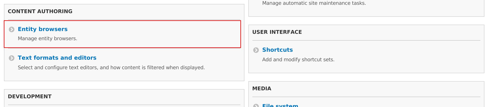
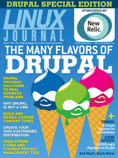

Using AI to Upgrade a Simple Frontend VAT Tool
This post was originally published on Tag1.com.
Slovenian tax authorities recently introduced new VAT reporting requirements. Data now needs to be submitted in a specific XML format they defined just for this task, while my accountant keeps everything in Excel. A while ago I wrote a small frontend application that converts data from Excel files into the required XML.
How AI Tools Helped Me Make My First Home Assistant Contribution
This post was originally published on Tag1.com.
As software developers, we've all been there: you're using an open-source project, you notice a missing feature or improvement, but contributing feels daunting because you're unfamiliar with the codebase. The learning curve can be steep enough that many of us simply move on rather than contribute. But what if AI could lower that barrier?
Real-time auto save with Phoenix LiveView
In the past weeks I spent quite some time working on BitQ&A; my side project that explores possibilities that digital currencies offer. BitQ&A is a Phoenix application that I initially created for the 2nd Bitcoin SV virtual hackathon. It was also the first project where I had an opportunity to try LiveView (brilliant tool that brings rich real-time UX to Phoenix).
BitQ&A: hackathon finals presentation
BitQ&A: interview
Slovenian Drupal community celebrated the release of Commerce 2.0
As you may already know the Commerce Guys team released the first stable Drupal 8 version of the truly flexible eCommerce suite last week. In order to celebrate this important event many parties were held all around the globe. Slovenian Drupal community definitely didn't want to miss that.
Call for help with Media source plugin porting
As you may already know Media entity module entered Drupal 8.4 as Media module earlier this year. This was the result of years of hard work in contrib and core space. While the module stayed conceptually the same we used this opportunity to clean it up and refactor some things; mostly to make APIs even easier to understand and use.
Time to take some time off the Drupal community
When I joined the Drupal community I felt that I arrived in the enthusiastic, welcoming and positive environment. I felt that all contributions are appreciated and that we're all following more or less the same goal. This belief was also mostly the source of motivation for my extensive contributions to the Drupal 8 Media initiative in the past 4 years or so. This has dramatically changed in the last year or so and seems to be getting worse all the time.
Get ready for the Media workshop at Drupal dev days Seville
Tomorrow I'll be giving a workshop about the Drupal 8 media. As part of it we'll build a "media" site from scratch. We will start with the standard Drupal installation, add modules and configuration and see how far we can get.
If you are planning to attend the workshop and want to be fully productive I'd ask you to take some time and prepare your development environment. We will need Drupal 8 checkout with the following modules:
Want to learn Entity browser?
One way to start is to check the session that gave at the Drupal dev days Milano in June 2016. I went through the architecture of the module and most common use cases.
Possible solution for knowledge sharing in the Drupal 8 media domain
Drupal 8 has very good media handling support. Media team has (and still is) working hard to make Drupal the best CMS in the world when it comes to managing media. We have many modules in the contrib space that solve most of the common use cases in the domain. There is one problem though; there are many of them and some of them are quite complex and abstract. I've noticed that many times users struggle to completely understand what each module is responsible for, which features it comes with and specially how they all together fit into the bigger picture.
Playing with the Sculpin static site generator
I can hear you asking: "What the hack is that?" Let me quote the Sculpin's authors:
Entity browser feature freeze will happen in two weeks
Today I released Entity browser 8.x-1.0-beta4. Release includes some nice features; specially Improved MultiStep selection display, which vastly improves editorial experience.
Join us at the next Drupal Media sprint at the Mountain camp in Davos!
Are you excited about the recent improvements in Drupal core Media? Would you like to join us at one of the next sprints and help us reach our goals? Now you can!
Results of the Drupal 8 media sprint
December media team met in Berlin and sprinted on Drupal core media improvements for a week. In this post I summarize the results.
Drupal 8.2.0 and composer wonderland
Over the weekend I took some time to update this site to the latest and greatest Drupal. Update itself was pretty straightforward and it went without any problems (great work Drupal community!).
Drupal dev environment on Docker
I've been using a Docker based development environment for about a year. The purpose of this post is to document how I do it and hopefully get some feedback from other Docker users.
I will update this post as I evolve my approach and learn better ways of doing things.
Call for Drupal 8 media ecosystem co-maintainers
As many of you most likely already know we've been working on various media-related modules for a while now. Ecosystem as a whole is getting more and more stable and we're seeing great adoption numbers, which proves that we're on the right track.
Releases of various Drupal 8 media modules
Today we released new versions of many Drupal 8 media modules. This release is specially important for Entity browser and Entity embed modules since we released the last planned alpha version of those modules. If there will be no critical bugs reported in next two weeks we'll release first beta versions of those modules.
List of all released modules:
Blog design refreshed
Today I am very excited! A while ago I asked my friend David Ličen to help me improve appearance and UX for my personal blog. He carefully observed my desires and added some of his own ideas. When we agreed on the initial mock he proceeded with the theme implementation.
He finished his part a while ago. I needed to tweak few other things on the back-end too, which took me way too long to do. Today I finally decided to finish this and deployed the changes to the live website.
How do you like it?
We had great and productive time at NYC sprint!
As you may already heard a big free software conference, Open camps happened at the United nations headquarters in New York last week. As part of the NYC Drupal camp, which was just one of the many camps that happened during it, a week-long Drupal 8 media sprint was held.
Media team had great time there and I would like to share our impressions with you.
Sam Morenson is thinking about media in Drupal core
My friend and a long time member of the Drupal media team has published a blog post where he thinks about media in Drupal core and possible ways forward.
I am very happy to see mature debate evolving in this area. We need more of that!
Presentations about various Drupal 8 media modules
In the past few months I gave many talks about the modules that we created as part od Drupal 8 media initiative.
Drupal 8 Media module at Google Summer of Code 2016
In this video Vijay Nandwani, our GSoC student, explains his progress on the Drupal 8 Media module.
He also wrote a blog post where he explains more technical details.
We loved Drupal Developer Days!
Last week part of the MD Systems team attended Drupal Developer Days in Milan.
Italian style dinner at Navigli in Milano. #drupaldevdays pic.twitter.com/CQOpIpmSGg
Drupal's number 1 is from Switzerland
Swiss has traditionally been dedicated to the best quality and innovation. Some of the best things in life come from Switzerland. Did anyone mention chocolate?
 Photo by
Photo by Drupal community, please meet Vijay
Google summer of code 2016 started with a full swing this week. Vijay is one of the students participating in it. He is working on the Media module for Drupal 8.
He wrote an introduction blog post. I'd like to invite you to read it, say hi and follow his work as it progresses through the summer.
Welcome in the Drupal community Vijay!
Media entity reaches 8.x-1.0!
More than two years ago I gave a session about the future of media at DrupalCon Prague. The outcome of that session was a planning sprint that happened two days after it. One of the ideas that was born on that sprint was Media entity, storage layer for media-related information built with simplicity and support for remotely hosted media in mind.
Goodbye Examiner, hello MD Systems
Approximately 3 and a half years ago I was finishing my job at Delo. I gave my notice in two months before, but I still had two more months to go. Yes, my notice period was 4 months (please learn from my mistake and never agree on something like that)! I was planning to take a break, travel Asia for few months, spend more time with my family and life to be easy and relaxing for some time. As you will see things didn't really work out that way...
Image effects module for Drupal 8
Image effects is a new module for Drupal 8 as it didn't exist in previous versions. It's purpose is to bring most of contributed image effects under one roof. This makes a lot of sense since it prevents fragmentation and makes effects easier to find.
Entity browser got configuration UI
Today I committed a configuration UI patch to the Entity browser module. This significantly improves experience for site builders. It is now possible to create, update and delete entity browsers without hacking yaml configuration files.
Configuration is available under Content authoring configuration: 
Time to submit Summer of code proposals!
Google Summer of Code is a global program focused on bringing more student developers into open source software development. Students work with an open source organization on a 3 month programming project during their break from school.
A lot of exciting Drupal 8 media news!
Media made a big leap towards a first major milestone. It's time to test what we have and help stabilise it.
After media sprint in Zurich, which happened in December, we didn't sleep. Together with the team at MD Systems we actively worked on parts of media ecosystem. Would you like to know what we achieved?
janezurevc.name runs on Drupal 8!
Drupal 8 was officially released last November. Since then I have planning to try to migrate my blog from previous version of this great CMS. Drupal 8 comes with many improvements and I definitely wanted to leverage those on my site as well.
Curious how it went? Read on...
Zurich Drupal 8 media sprint was a success!
Almost exactly two months ago MD Systems announced the Media initiative program that they initiated in cooperation with Ringier, Gassmann media and Südostschweiz. Initiative was kicked off with a week long sprint, which happened at first week of December in Zurich.

Photo by Stefanie Gupta
When will media be ready for Drupal 8?
With Drupal 8 around the corner a lot of people started asking me when will media be ready. It was quite reasonable to expect this to start happening. Unfortunately there is no simple answer to this question. Shortest would be: "It depends.... What exactly do you need?". I know what you're thinking now... "Are you joking with me!?"

Core media team at NYC Camp 2014.
1st Drupal 8 media virtual sprint was a success!
On Friday, 2nd Oct 2015, we organized the first virtual media sprint. Four sprinters showed up and worked on D8 media issues.
Drupal 8 from my media perspective - update #3
It's been a while since my last post and with BADCamp behind us and some very nice improvements it seems a good timing for another update.
Drupal 8 from my media perspective - update #2
It's been a while since my last post and with DrupalCon Amsterdam behind us it seems a good timing for another update.
Drupal 8 from my media perspective - update #1
Media team is very active. Purpose of this post is to provide the progress update to the rest of the community that might not be aware of everything that is going on in this field. I am planning to publish this posts on a regular basis. We'll see how it goes :).
Progress of Entity embed module in GSoC 2014
If you want to try the module and/or contribute please visit the project page. You are also invited to check original post on groups.drupal.org.
Progress of Disqus project in GSoC 2014
Drupal community, please meet Chandan Singh
Chandan is one of the Drupal's students that were accepted into Google Summer of code program this year. He wrote an introduction post to say hi and explain what he's working on.
Drupal community, please meet Jayesh Solanki
Jayesh is one of the Drupal's students that were accepted into Google Summer of code program this year. He wrote an introduction post to say hi and explain what he's working on.
DrupalCamp Alpe-Adria - ticket prices go up in only 4 days!
DrupalCamp Alpe-Adria will be one of the most scenic Drupal events this spring in Europe. It will take place in a magnificent costal town Portorož, which is conveniently located in the northern part of Adriatic sea.
You should come to DC Alpe-Adria (really!)
If you came this far you probably liked this video just as much as I did :). You should really consider coming to Portorož in May to attend DC Alpe-Adria. We will have 2 days of great sessions, BoFs and sprints + 2 more day of extended sprints where we're going to focus on D8 and making it rock!
HHVM and Drupal (i.e. Drupal drinks some RedBull)
I've been following HHVM (HipHop Virtual machine) for some time now. Project got a bit more of my attention about a year ago, after session at FOSDEM 2013 by Sara Golemon. PHP has been criticized for quite a lot of it's characteristics, performance definitely being one of those. HHVM seemed to be very promising about fixing it and that's why it got my attention in the first place.
Creating Hello World Module for Drupal 8 (Code-In project)
One of Code-in students, Vijay Nandwani, created a screencast about Hello world module for Drupal 8. I think it is definitely something that needs to be shared with the community.
Drupal 8 media battle-plan - open discussion
There is a discussion about media in Drupal 8 going on at g.d.o. See https://groups.drupal.org/node/384813 and get involved!
Drupal 8 media sprint @ DC Vienna
Note: this is X-post from g.d.o. Please post your comments there.
DC Vienna was taking place last weekend with extending sprints on Monday and Tuesday. We started Drupal 8 media part of this great DrupalCamp on Saturday with a BoF. We discussed some of the current architectual decisions there and kicked-off a sprint that was happening on Sunday, Monday and Tuesday. We mostly worked on basic low-level things for media entity such as:
Google Code-In and Drupal
 Google anounced that they are running their Code-In programme also this year. Google Code-in is a contest for pre-university students (e.g., high school and secondary school students ages 13-17) with the goal o
Google anounced that they are running their Code-In programme also this year. Google Code-in is a contest for pre-university students (e.g., high school and secondary school students ages 13-17) with the goal o
drupal_bootstrap(DRUPAL_GR8_MEDIA);
We had a core conversation about media at DrupalCon Prague. It's conclusion was that we should organize a sprint where we would discuss media handling in Drupal 8. Sprint actually took place on Friday, the official sprint day at DrupalCon. It was completely non-coding sprint as we could better describe it as a meeting.
Why do we complain about Drupal media solutions? (AKA LFFAMHOAFA pt. 2)
This is second post in a series of blog posts related to my DrupalCon Prague session called "Let's fix file and media handling once and for all". In the first article I invited community to complete a survey.
Let's fix file and media handling once and for all - pt. 1
This is first post in a series of blog posts related to my DrupalCon Prague session called "Let's fix file and media handling once and for all". In the second article I presented survey results.
Debug drush requests in PHPStrom
None but ourselves can free our minds...
Download DrupalCon session recordings for offline viewing
After great DrupalCon Portland I had to fly home. And it was a VERY long (10h+) transatlantic flight, so I decided to download some videos on my laptop and watch them during my flight. I could use a service like keepvid.com, but since I selected 20+ videos I needed something smarter.
One love
Help Vincenzo Rubano!
Vincenzo Rubano is a Drupal contributor from Italy. He is blind and very active in accessibility and he contributed a lot of patches that made Drupal better in that. He would like to attend DrupalCon Portland and he asked us to help him to achieve that. Here is his video:
Get your ticket for DC Alpe-Adria!
DC Alpe-Adria (DCAA) is first bigger event organized by Slovenian Drupal community and will be the biggest Drupal event in this part of Europe in spring 2013. It will take place in hear of the Europe, Ljubljana, ob 13th and 14th of April. 
Multi-file uploads in Drupal 8?
EDIT (20.4.2013): This has been committed and is now part of D8 core.
DC Alpe-Adria is out!
Slovenian Drupal community is preparing the first biggest Drupal event in Slovenia. Drupal Camp Alpe-Adria (DCAA) is a Central European Drupal event that will gather Drupal users, developers, supporters and fans from Alpe-Adria region countries and of course everyone else that is willing to come.
The world is mine!

Goodlife

I've taken this picture in a bar in Taormina, Sicily. We were at the vacation with my family and we stopped in this gorgeous bar for a drink and to enjoy a view from their terrace.
Google Code-in != Drupal
Google Summer of code is very well know in our community, but it is not the only Google's program for open source projects. Another interesting project is Code-in, which is focused on pre-university students aged between 13 an 17 years. It's goal is to promote open source between young people and to encourage them to participate. Code-in is a great opportunity for projects like Drupal to attract new enthusiasts that have potential to become good developers in the future.
Drupal's Plupload integration - file_validate()
Kevin Hankens posted an issue in Plupload's integration module a while ago. He complained about the way how module invokes file_validate() at uploads. After a bit of research I agreed with him.
Google Code-in 2012-2013 is here!
Organization application time-frame opens next week. Want to help Drupal beeing part of it? Check https://groups.drupal.org/node/261983.
Setting default printer for lpr in Linux
To set default printer just set environment variable called PRINTER. In my case:
PRINTER=Samsung_ML-1710; export PRINTER
Linux Journal's Drupal special edition
Latest issue of Linux Journal is completely dedicated to Drupal. You will find a lot of really interesting articles in it.
One of them is my article about cache in Drupal, where I describe how it works and how to use it. I also compare performance of different cache backends and describe some techniques that will help you to make your website run faster.
Photographer

Materialization Plugin for Views (GSoC 2012)
I was mentoring Dhruv Baldawa at his SoC project this year. Project focused on implementation of materialization plugin for Views. He presented his work in this screencast:
Relation Migrate integration and *reference upgrade path
Mastering Drupal cache - video
At Drupal developer days Barcelona I gave a session about cache in Drupal 7. Video and slides are now available for those who missed it.
Strange behaviour (race condition) during node_save()
Problem
We have a bigger media website on Drupal 7 with an editorial team of ~20 members. Lately they started to complain about strange behavior when updating content on site. They said, that changes were not saved at all. If they opened a node form immediately after saving it Drupal served old (outdated) content. I first suspected Varnish, but it turned out that Varnish worked OK. Later I realized that the problem obviously lies in field cache.
Goodbye Pulseaudio, welcome ALSA
Last time I had really big problems with sound on my HP laptop (running Ubuntu 12.04 and Intel audio card). It was almost impossible to use skype/hangouts/google chat. After a bit of research I realized that the problem appears because of Pulseaudio crashes. I followed this tutorial, removed Pulse and switched to ALSA. Sound was now working OK, but audio hotkeys were not functioning. Apparently the solution from tutorial did not work.
Community momentum
There was a Drupal Balkan summit taking place in Sarajevo, Bosnia and Hercegovina, yesterday. The last session, given by perke, was about awesome things that are happening in Drupal 8. When he presented a Views in Core initiative something absolutely awesome happened. People started to collect money to give a common contribution and I transferred $150 to initiative's Chip-in there at the session.
Fishing boat

Happy Cook

JavaScript patterns
Patching directly from web
Usually I download patch and use it when on my machine. A lot of times I do not need patch on my machine, so figured out how to patch directly from web:
wget -qO- https://example.com/path/to/patch/file.patch | patch
Zrenjanin, Serbia

Town hall, Zrenjanin, Serbia

King Peter I., Zrenjanin, Serbia
How to get client's IP number to Drupal when using Varnish
There are a lot of places, where you need client's IP address in Drupal (or any other CMS/web app of course). The problem arises, when you use a reverse proxy server (like Varnish), since every request to web server will be done by the latter. We will have every single visitor of our website coming from a single IP (reverse proxy), as a result.
slovenskenovice.si - biggest Slovenian Drupal site
Slovenske novice are Slovenian national daily newspaper with largest circulation on national level. Last week we lunched redesign of it's web variant, which is a news portal with about 200.000 unique visitors and 4.5 million impressions per month. This numbers wil definetely become larger soon, as they have monthly growth between 10 and 15%.
Survey about satisfaction with Scrum
I am currently working on my bachelor thesis at Faculty of Computer and Information Science in Ljubljana. The topic of my thesis is implementation of Scrum methodology in a webdev department of the biggest national daily newspaper company, Delo.
DrupalCon Denver 2011 - Media derivatives: take control over your files
Derivatives API is a Drupal project I developed during this year's Summer of Code. It is a framework, that tries to implement a simple, reliable and powerfull framework for asset derivation in Drupal. It can cover a lot of different use cases. We are in the times of emerging new technologies of HTML5, mobile publishing, responsive web, ... I believe that Derivatives API has it's piece in a puzzle of support of this new technologies on Drupal.
Moonlight

Verona by night...


Slides for my session at DrupalCamp Verona
Go for it! :)
How to add custom contextual links to views?
Today I had a task to add nodequeue manipulation contextual links to some view. First I found this blog post, which explains, how to make desired menu items contextual links ready. As Marcus states in his post, I first needed to alter nodequeue menu items:
5 day challenge (i'm in!:)
Today Jakub Suchy proposed a really cool thing on his blog. Idea is about spending 30 minutes each day in the next week to contribute something to Drupal. He proves, that only 63 people doing this, can do as much work as an individual could do in a month.
Since I immediately loved this idea, I decided to join. Here is my plan for #d5dChallenge:
BoF about Media Derivatives API on DrupalCon Lonon
There will be a BoF session about Media derivatives API on DrupalCon London.
I will present the current state of this project and planned roadmap during this BoF. I will also explain how to use it and how to develop plugins for it.
You are more than welcome also if you have any suggestions for improvements.
Screencast: HTML5 <video> support with multiple files using Media Derivatives API
Have you seen my previous screencast (Intro in Derivatives API)?
In this screencast I show how to easily support HTML5 <video> tag on all major browsers using two derivatives of source video, created by Derivatives API. This is a sample feature. It's purpuse is to show how Media Derivatives API works and should not be used in production envirnonment.
Screencast: Derivatives API intro (GSoC 2011)
In this screencast I want to show you basic workflow with Derivatives API, my Summer of code 2011 project. Derivatives API works with Media ecosystem and it's purpuse is to provide a solid and extensible framework for automated file derivations.
You will also see how different plugins work and get an idea what should be possible to do with them.
Scheduled actions - screencast
Scheduled actions is a simple module for Drupal 7, that allows you to create advanced actions, that would schedule another action and to schedule actions for a given node at it's edit form. In this screencast I explain the basic features of the module.
Derivatives API: midterm status update
This year's Summer of code has come to it's midterm evaluation, and this could also be a great opportunity to write some words about my project. As I've written before, I work on Derivatives API for Media ecosystem in Drupal 7.
Derivates API: Feature list
I did a lot of research, talking to community people and thinking about my GSoC project. More detailed features list has been created as a result of that. I encourage you to check it out and propose some improvements and comments to it.
Drupal Coder review ignore file
Few days ago I found core.coder_review_ignores.txt file in Coder review's folder. It was quite clear, that can be used to ignore false positive errors, but I was not sure how. Thanks to solotandem I now know how to used it. If you want to add your custom ignores, you first have to implement hook_coder_review_ignore().
Slideshow: Drupal 7 v praksi (Practical Drupal 7)
Here are the slides for a session that will be presented today on WWW hours in Cyberpipe. Session will be presnted by Iztok Smolič (@Iztok), Tadej Baša (@paranojik) and myself.
How to install Trac, Agilo for Scrum and Git browser on Ubuntu 11.04
Agilo for Scrum is a project management tool for Scrum. Agilo is open source software, but you can also buy Pro extension. It is a web application, based on Trac, which is a great lightweight, flexible and extensible ticketing software.
Summer of code!
I've been accepted to Google's Summer of code programme this year. I'll be working for Drupal. Drupal is a great, powerfull and flexible CMS, written in PHP.
Download entire web page using wget
I needed to download entire web page to my local computer recently. I had several requirements:
History of programming languages and statistics
{kind=link}
The surprising truth about what motivates us
Mass resize of PDF files
Some days ago I faced a situation, where I had to resize ~50 PDF docs from US Letter to A4 format. It was a set of travel orders from Slovenian online service potninalog.si. Their PDF exporter was generating documents in US Letter (which is really strange, since we mostly use A4 in Slovenia), but my printer was refusing to accept those.